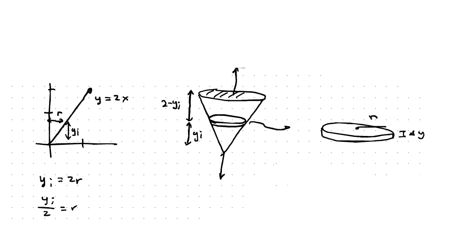
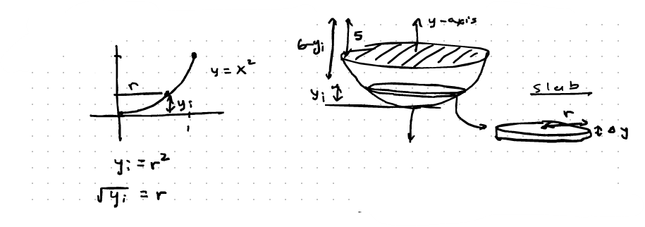

Find the work needed to pump liquid out of a tank.
Definition: A Slab is a horizontal cross-section of liquid with a very small change in height ($\Delta y$).
Example generic bounds:
$a=0$
$b=2$
$\Delta y = \frac{2-0}{n}$
Find the work needed to pump water out of the cylindrical tank to a height 2 meters above the tank. The weight density of water is $9810 \text{ N/m}^3$.
$$ \text{Volume} = \pi(3)^2 \Delta y = 9\pi \Delta y $$
$$ \text{Weight} = (9810)(9\pi \Delta y) = 88290\pi \Delta y $$
$$ \text{Distance} = 10 - y_i $$
$$ \text{Work} = (10 - y_i)(88290\pi \Delta y) = 88290\pi(10 - y_i)\Delta y $$
The curve $y = 2x$ on $[0,1]$ is rotated about the y-axis to construct a tank with $x$ and $y$ measured in meters. The tank is filled with oil ($8300 \text{ N/m}^3$). How much work is required to pump oil to the top of the tank?

$$ \text{Volume} = \pi \left(\frac{y_i}{2}\right)^2 \Delta y = \pi \frac{y_i^2}{4} \Delta y $$
$$ \text{Weight} = 8300\pi \cdot \frac{y_i^2}{4} \Delta y = 2075\pi y_i^2 \Delta y $$
$$ \text{Distance} = 2 - y_i $$
$$ \text{Work} = (2075\pi y_i^2 \Delta y)(2 - y_i) = 2075\pi (2y_i^2 - y_i^3)\Delta y $$
The curve $y = x^2$ on $[0,1]$ is rotated about the y-axis to construct a tank where $x$ and $y$ are measured in meters. The tank is filled with a liquid of density $9970 \text{ N/m}^3$. How much work is needed to pump the liquid 5 meters above the tank?

$$ \text{Volume} = \pi \left(\sqrt{y_i}\right)^2 \Delta y = \pi y_i \Delta y $$
$$ \text{Weight} = 9970\pi y_i \Delta y $$
$$ \text{Distance} = 6 - y_i $$
$$ \text{Work} = (9970\pi y_i \Delta y)(6 - y_i) = 9970\pi(6 - y_i)y_i \Delta y $$